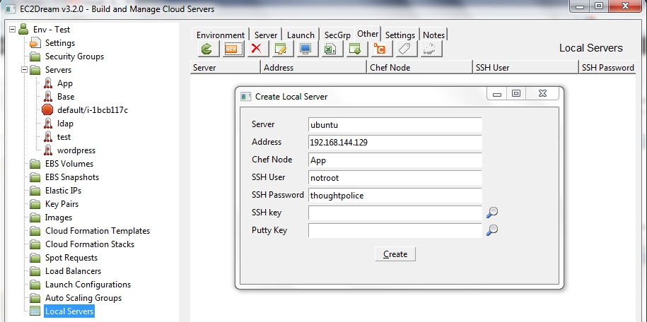

Local Servers for Cookbook Development
A good way to do chef cookbook development is against virtual servers on your desktop machine or your local network. This can reduce the cost of cookbook development on cloud servers where you pay an hourly charge for ever time you start a server. Once you have the cookbook developed you can can then run it on a cloud server and then do integration testing with the other servers in your stack.Setup a running linux server
First you need a running linux server for testing. I followed http://www.howtogeek.com/howto/11287/how-to-run-ubuntu-in-windows-7-with-vmware-player but the following instructions will work for other environments.1. Install Virtalisation Software
Download and install VMWare player from http://www.vmware.com/products/player/ or directly from
http://downloads.vmware.com/d/info/desktop_end_user_computing/vmware_player/4_0
or download oracle virtualbox
2. Download a linux image
I used ubuntu 11.10 server from http://www.thoughtpolice.co.uk/vmware
3. Unzip into a directory and execute the vmx file to start it
4. Set network as NAT in the VMplayer settings
5. Logon as user notroot password: thoughtpolice
6. Use ifconfig to check you have ip address and make a note of the address ie 192.168.155.12
7. Install ssh
sudo apt-get update
sudo apt-get install openssh-server
and then restart the server
8. Suppress the root password when doing sudo command
sudo visudo
Add this line at the end:
notroot ALL=(ALL) NOPASSWD: ALL
Then enter Ctrl-X to leave, save the changes
9. We now have a working linux server. You might like to take a backup copy of the directory.
Create a local server
Run fogviz in a command prompt (or if you installed it as ec2dream run ec2dream).1. In the tree view click on Local Servers and then click new button to create a local server definition.

2. Give the server a name and enter the IP address noted earlier. (If you leave out the ip address EC2Dream Fogviz will use the server name to access the server)
I entered:
Server: ubuntu
IP Address: 192.168.144.129
Chef Node: App
SSH user: notroot
SSH password: thoughtpolice
3. Test you can access the server via ssh by pressing the terminal button.
4. Press the chef button and install the App node on the server.
5. Test apache works in the browser by entering the ip address in the browser.